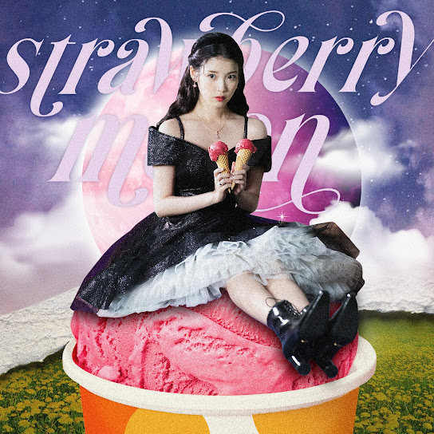
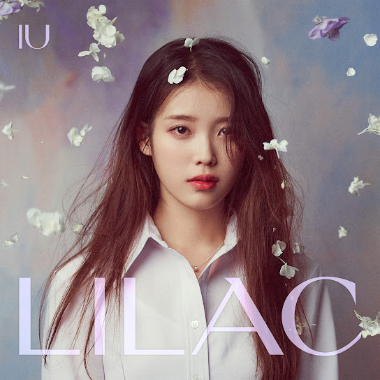

IU
Artist • 8.51M subscribers
Songs

strawberry moon
IU • strawberry moon (strawberry moon) • 3:26
Through the Night
IU • Through the Night • 4:14
Blueming
IU • Love Poem • 3:38

Celebrity (Celebrity)
IU • IU 5th Album 'LILAC' (IU 5th Album 'LILAC') • 3:16